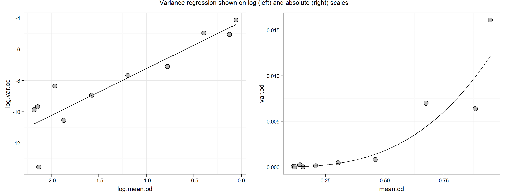
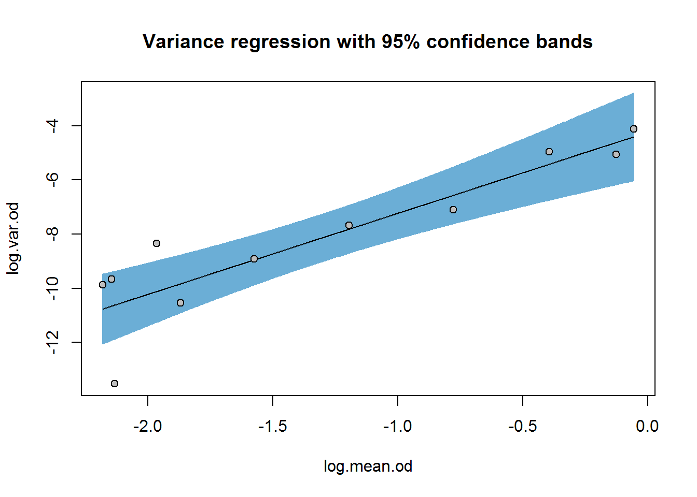

Before modeling the shape of the calibration curve, we will estimate the response-error relationship (RER). From what is generally known about ELISA data and given the descriptive analysis of the O’Connell data so far, we can be reasonably sure that these data are heteroscedastic. The variability of the data seems to increase with increasing response. Ignoring the heteroscedasticity may result in the regression estimates being biased. Importantly, estimates of the working range of the immunoassay, estimates of uncertainty around the calibration curve or around the concentration estimates for new samples will be biased. Thus we will arrive at a final calibration model through a multi-step approach beginning with the estimation of the RER.
Import and review the structure of our ocon data set:
# ------ Import ocon.csv ---
# An alternative syntax for file paths (especially useful when paths are long)
data.path <- "../data"
ocon <- read.csv(file.path(data.path, "ocon.csv"), header = TRUE, stringsAsFactors = FALSE)
# Check
str(ocon)## 'data.frame': 36 obs. of 3 variables:
## $ conc: int 0 0 3 8 23 69 206 617 1852 5556 ...
## $ rep : int 1 1 1 1 1 1 1 1 1 1 ...
## $ od : num 0.1 0.12 0.12 0.12 0.13 0.153 0.195 0.28 0.433 0.593 ...Based on general experience with ELISA data, it has been recommended to assume the response (od) follows a normal distribution, \(N(mean_i, var_i)\), at the \(i^{th}\) concentration level (O’Connell, Belanger, and Haaland 1993).
Summarise the data into a table of means and variance by concentration:
# Mean, var and SD
ocon.sum <- ddply(ocon, .(conc), summarise,
n = length(na.omit(od)),
mean.od = mean(od, na.rm = TRUE),
var.od =var(od, na.rm = TRUE))
ocon.sum## conc n mean.od var.od
## 1 0 6 0.1130000 0.000052000000
## 2 3 3 0.1170000 0.000063000000
## 3 8 3 0.1186667 0.000001333333
## 4 23 3 0.1403333 0.000236333333
## 5 69 3 0.1543333 0.000026333333
## 6 206 3 0.2070000 0.000133000000
## 7 617 3 0.3026667 0.000466333333
## 8 1852 3 0.4593333 0.000826333333
## 9 5556 3 0.6736667 0.006996333333
## 10 16667 3 0.8820000 0.006393000000
## 11 50000 3 0.9453333 0.016116333333With our estimates for mean response and variance of the response for each calibrator (known concentration) group, we can look at the relationship between them. The literature generally recommends starting with a power function, e.g. (Dunn and Wild 2013):
\[Var(y) = intercept * Mean(y)^{theta}\]
This function can be linearised by taking the logarithm of each side:
\[log(Var(y)) = log(intercept) + theta * log(Mean(y))\]
Now we have a linear equation with familiar parameters, intercept and slope.
# Variance regression uses log(variance) by log(mean response)
ocon.sum$log.mean.od <- log(ocon.sum$mean.od)
ocon.sum$log.var.od <- log(ocon.sum$var.od)
# Variance regression using linear regression function, lm()
var.reg <- lm(log.var.od ~ log.mean.od, data = ocon.sum)
summary(var.reg)##
## Call:
## lm(formula = log.var.od ~ log.mean.od, data = ocon.sum)
##
## Residuals:
## Min 1Q Median 3Q Max
## -2.9070 -0.4824 0.1476 0.6819 1.7686
##
## Coefficients:
## Estimate Std. Error t value Pr(>|t|)
## (Intercept) -4.2408 0.7383 -5.744 0.000278
## log.mean.od 2.9933 0.4808 6.226 0.000154
##
## Residual standard error: 1.276 on 9 degrees of freedom
## Multiple R-squared: 0.8116, Adjusted R-squared: 0.7906
## F-statistic: 38.76 on 1 and 9 DF, p-value: 0.000154theta <- coef(var.reg)[[2]]The variance regression results say that for every 1 unit increase log(mean.response) increase, log(variance) increases about 3 times; this is our estimate for \(theta\). On the untransformed scale, the relationship is multiplicative. For example, as mean response doubles from 0.3 to 0.6, variance goes from 0.00039 to 0.0031 or about an 8-fold increase—which is also obtained from 23 = 8. This relative change holds true for each mean response (in the observed range).
Let’s plot it:
p.log <- ggplot(aes(y = log.var.od, x = log.mean.od), data = ocon.sum) +
geom_point(size = 4, shape = 21, fill = "grey") +
stat_function(fun = function(x) coef(var.reg)[[1]] + coef(var.reg)[[2]] * x)
p.abs <- ggplot(aes(y = var.od, x = mean.od), data = ocon.sum) +
geom_point(size = 4, shape = 21, fill = "grey") +
stat_function(fun = function(x) exp(coef(var.reg)[[1]])*x^coef(var.reg)[[2]])
grid.arrange(p.log, p.abs, ncol = 2,
main = "Variance regression shown on log (left) and absolute (right) scales")
Although there seems to be a smooth trend for the RER, the relationship is not known exactly. This uncertainty may be expressed in terms of confidence intervals for the regression parameters (i.e. the slope and intercept) or confidence bands around the regression line:
confint(var.reg)## 2.5 % 97.5 %
## (Intercept) -5.910943 -2.570635
## log.mean.od 1.905682 4.080964plotFit(var.reg, interval = "confidence", pch = 21, bg = "grey", shade = TRUE,
col.conf = blues[4],
main = "Variance regression with 95% confidence bands")
We’ll carry forward the point estimate for theta, 2.99, to curve-fitting, but keep in mind that there is considerable uncertainty in this estimate ranging from 1.9–4.1 (depending on the confidence level with which you are comfortable).
Variance components using ANOVA
The literature often recommends ANOVA (ANalysis Of VAriance) for estimating the RER. Given our simple data structure, ANOVA will not provide more information than the variance estimates calculated above, but we revisit ANOVA and pooled variance estimates in the R ELISA tutorial.
In this tutorial, we characterised the variance in the response with respect to the magnitude of response—the RER—using calibrator group as a factor. We estimated the variance function with linear regression and a linearised power function, which is one of the major methods recommended in the literature (e.g. Dudley et al. 1985, Dunn and Wild (2013)), although not in O’Connell (1993). We carry forward the power parameter, theta = 2.99, to the O’Connell curve-fitting tutorial keeping in mind that there is a lot of uncertainty in this estimate.
Dudley, R A, P Edwards, R P Ekins, D J Finney, I G McKenzie, G M Raab, D Rodbard, and R P Rodgers. 1985. “Guidelines for immunoassay data processing.” Clinical Chemistry 31 (8): 1264–71. http://www.ncbi.nlm.nih.gov/pubmed/3893796.
Dunn, John R, and David Wild. 2013. “Calibration Curve Fitting.” In The Immunoassay Handbook, 4th ed., 323–37. Elsevier. doi:10.1016/B978-0-08-097037-0.00013-0.
O’Connell, M.a., B.a. Belanger, and P.D. Haaland. 1993. “Calibration and assay development using the four-parameter logistic model.” Chemometrics and Intelligent Laboratory Systems 20 (2): 97–114. doi:10.1016/0169-7439(93)80008-6.